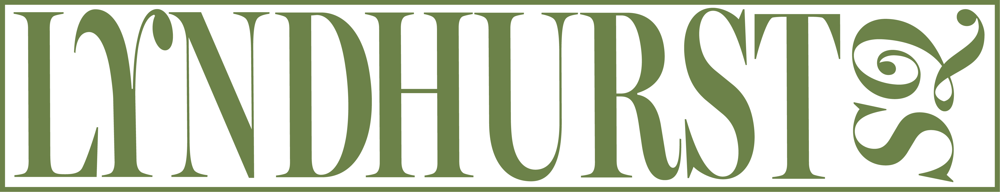
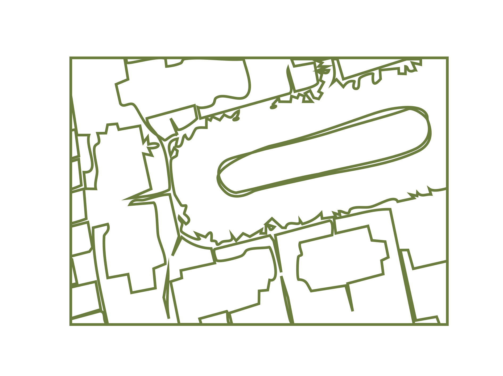

The houses and park of Lyndhurst Square were built in 1943, and are the first Victorian-Gothic houses in Peckham. The residents appricate this 'pocket park' as an ornamental aspect of their street. It has a wide variety of different trees, each illustrated on the postcards. A couple of them take part in guerrilla gardening, adding to the range of species of trees in the garden.

Sadly, due to the draughts happening in London, some trees have died in the park and more may die in the next few years due to temperatures rising. Additionally, the big trees take in most of the water meaning the smaller plants don't get enough water, resulting in an increase of leaves falling off.
HELP STOP CLIMATE CHANGE!